Los aparatos empleados en categoría femenina son barras asimétricas, barra de
equilibrio, suelo
y
salto de potro, mientras que en la categoría masculina son anillas, barra fija, caballo con arcos,
barras paralelas, salto de potro y suelo.
Aparatos femeninos
Salto de potro
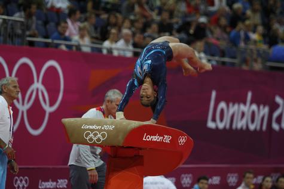
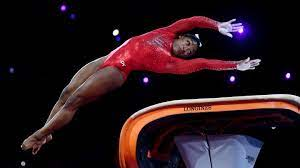
Para ejecutar un salto, el gimnasta corre a lo largo de una pista de salto, que usualmente está acolchada o tapizada. Realiza un impulso que lo lleva al trampolín y salta hacia la parte superior del potro con sus manos. Los gimnastas deben aterrizar de forma limpia, sin pasos adicionales o tropiezos, y dentro de una zona establecida en el colchón de aterrizaje para que sea ahí donde caiga el gimnasta después del salto.
Barras asimetricas
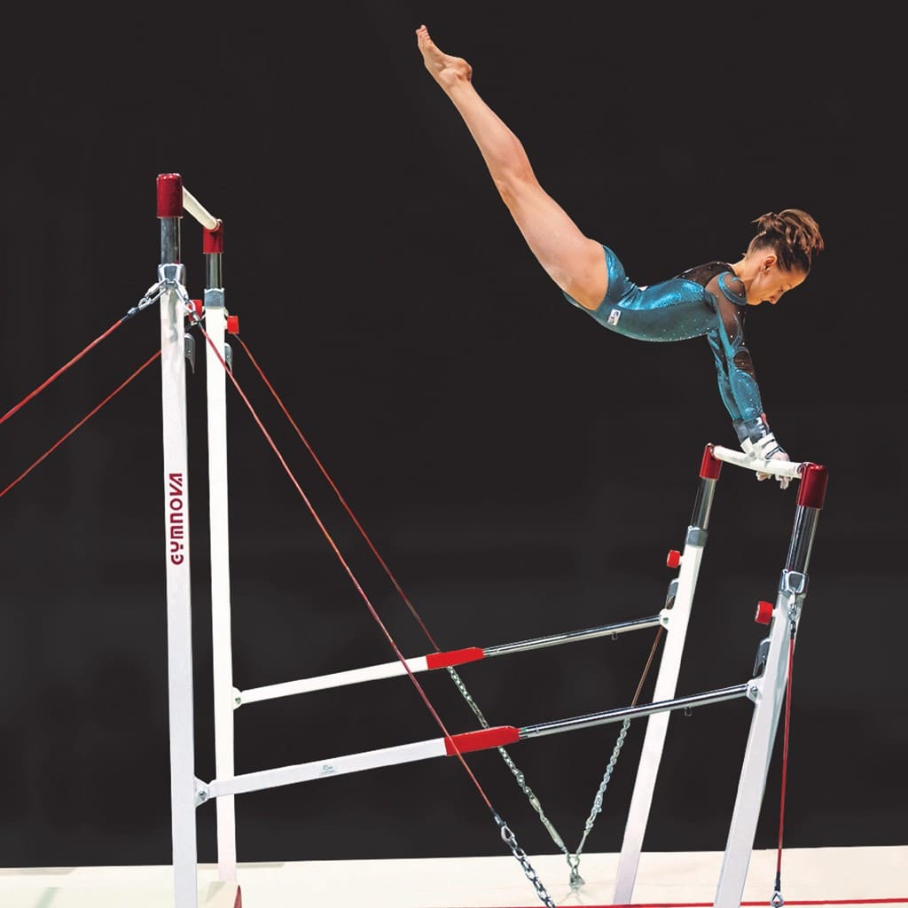
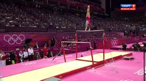
La rutina de los ejercicios de este aparato debe fluir de un movimiento a otro sin pausas, balanceos de sobra o apoyos de más. Cada ejercicio debe incluir dos vueltas.
Las gimnastas suelen subir a las barras haciendo un kip (saltar, agarrar la barra, llevar los tobillos a la barra y empujar hacia arriba) o utilizando un trampolín.
Suelo
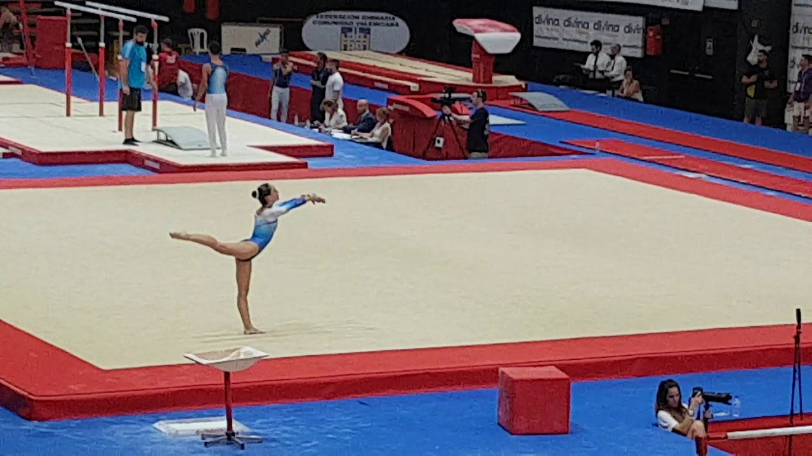

Viga
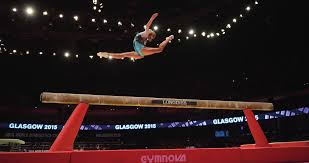
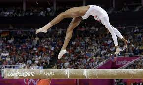
Las dimensiones de la viga son: una altura de 125 centímetros, una longitud de 500 centímetros y, una anchura de 10 centímetros. Por otra parte, un ejercicio en la barra de equilibrio debe contener un enlace de dos elementos de danza diferentes (uno debe ser un salto con split de 180°), un giro completo en un pie, una serie acrobática, elementos acrobáticos en diferentes direcciones y una salida.
Aparatos masculinos
Anillas
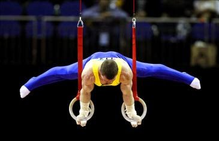
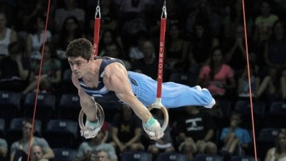
Consiste en realizar acrobacias en un aparato de 5,75 metros, de donde cuelgan dos anillas a 2,57 metros del suelo.
Las partes del ejercicio a realizar reciben el nombre de elementos; algunos son el cristo, la cruz invertida y la plancha. Los nombres describen la forma del cuerpo que se debe mantener con la mayor estabilidad posible. Para que un elemento sea puntuado como realizado debe ser mantenido durante al menos dos segundos.
Barra masculina
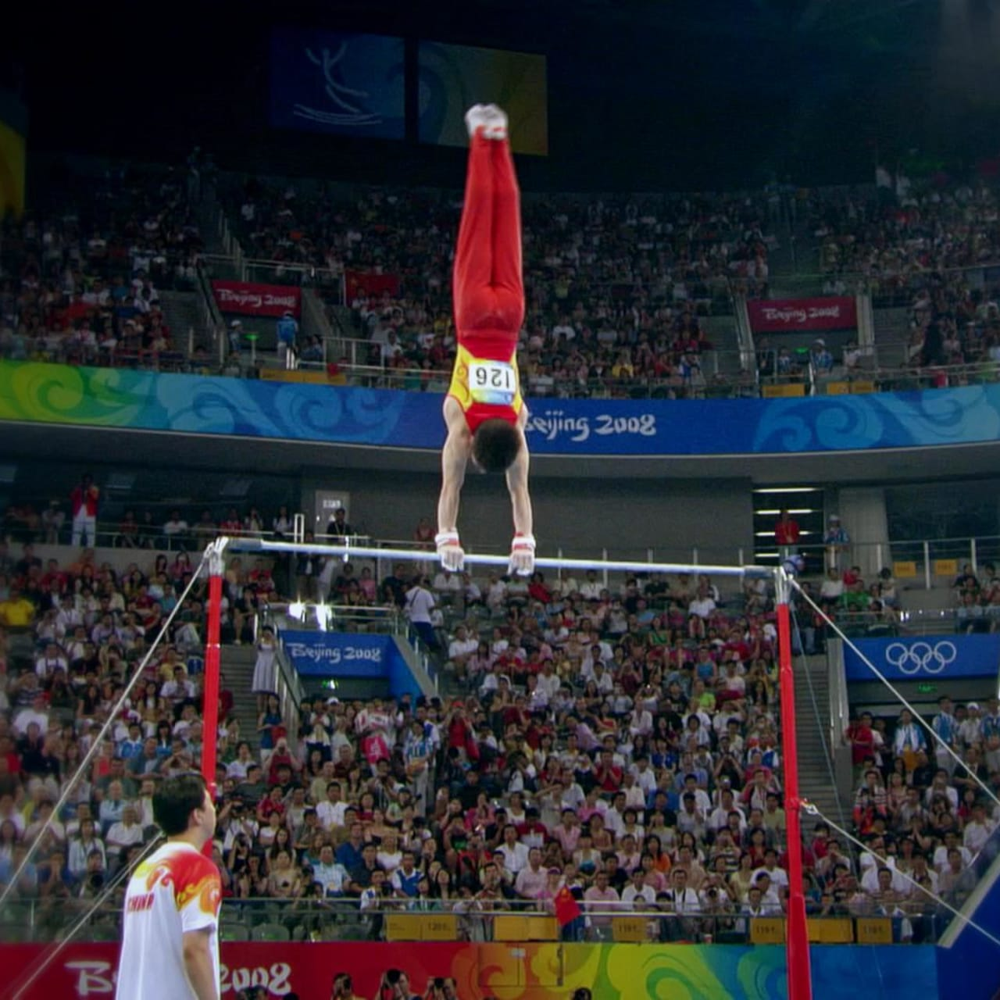
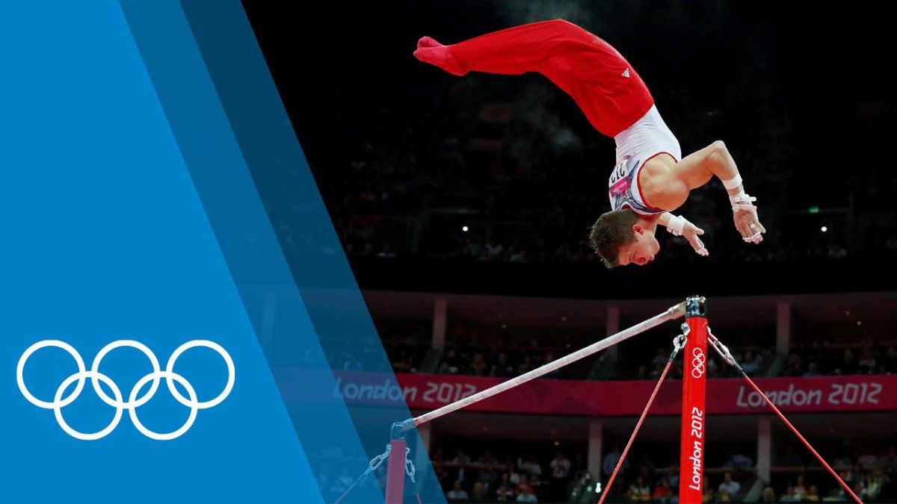
Un ejercicio de barra contemporáneo se inicia desde una posición estática o con una corta carrera para saltar a la barra y tiene que presentar una ejecución dinámica que conste de conexiones fluidas con impulsos, giros y sueltas, alternándose con elementos realizados en contacto con la barra y separándose, con variedad de presas. La barra fija comúnmente es considerada como uno de los eventos más populares de la gimnasia debido al poder exhibido por los gimnastas durante los giros gigantes y los espectaculares lanzamientos aéreos y desmontes que a menudo incluyen múltiples saltos o giros y, en algunos casos, los viajes en el aire por encima de la barra.
Barras paralelas
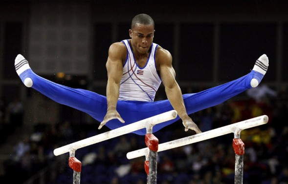
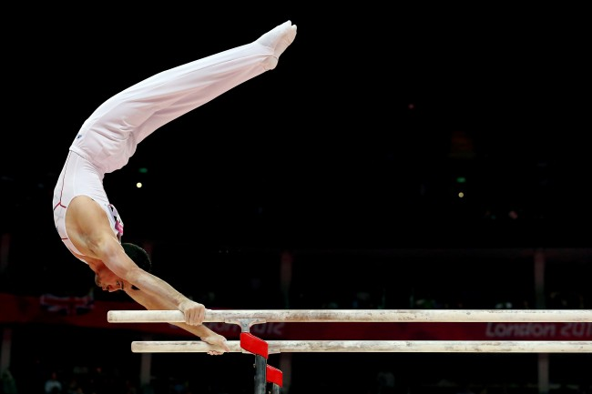
Los elementos de barras estrictamente requeridos son dos: de equilibrio, donde el gimnasta se apoya sobre las barras; y "sueltas", donde el deportista debe separarse del aparato y retomar el control del mismo. Los elementos de fuerza no son necesarios, pero los atletas de élite los utilizan para completar una buena rutina de competición. El uso de ambas barras es habitual, pero muchos gimnastas pueden valerse de una sola para realizar paradas de manos y algunos otros elementos que agregan fluidez a la rutina.
Caballete
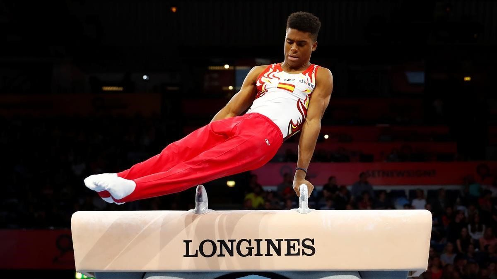

Salto de potro
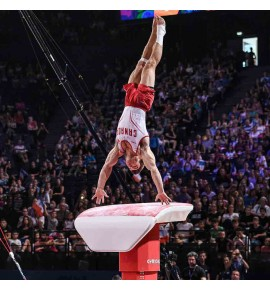
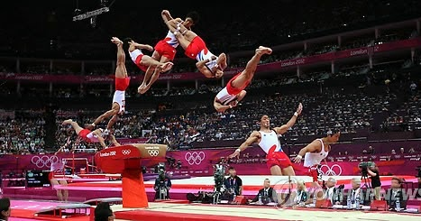
Las dimensiones de la viga son: una altura de 125 centímetros, una longitud de 500 centímetros y, una anchura de 10 centímetros. Por otra parte, un ejercicio en la barra de equilibrio debe contener un enlace de dos elementos de danza diferentes (uno debe ser un salto con split de 180°), un giro completo en un pie, una serie acrobática, elementos acrobáticos en diferentes direcciones y una salida.
Suelo
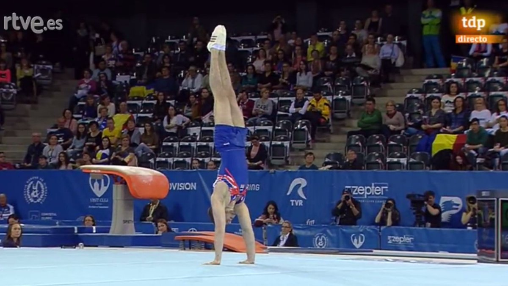
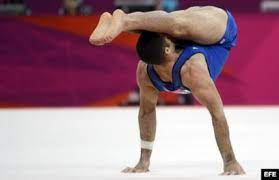
El ejercicio de suelo debe cubrir el área completa del tapiz con varias diagonales y se compone principalmente de elementos acrobáticos, combinados con elementos gimnásticos de fuerza y equilibrio, elementos de flexibilidad, apoyos invertidos y combinaciones coreográficas, formando un ejercicio con ritmo armonioso. En la modalidad femenina incluye elementos acrobáticos, flexibilidad, de danza, saltos y giros con cambios de dirección.